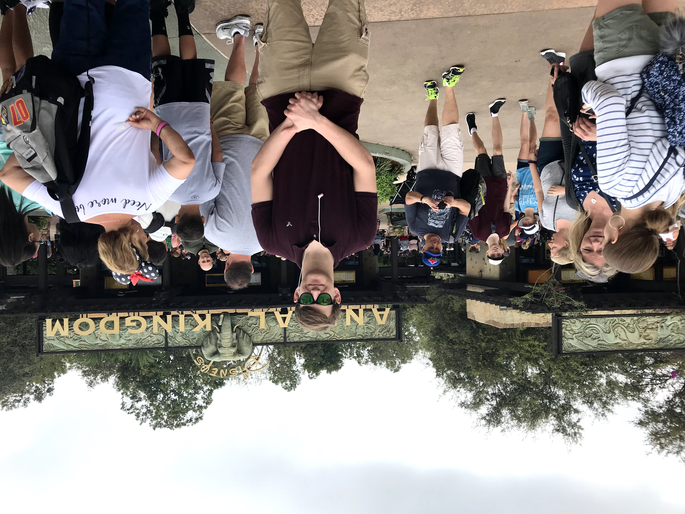

My name is Mitchell and im a 19 year old student from Newmarket, Ontario. I enjoy skateboarding, video games, movies and music. I currently have a collection of 13 vinyl record albums ranging from classic rock legends such as Led Zeppelin and Pink Floyd, to modern R&B artists like Tame Impala and the Weeknd.
Hobbies
- Skateboarding
- Video Games
- Music
- Movies
- Guitar (Elec, Bass)
Though I have prior experience coding with Java and Python, Im new to HTML and CSS. Im hoping this program will give me the skills I need to work freelance as a multimedia director. My ideal job would be to work with online content creators on platforms like Youtube and Twitch.tv. I would also enjoy working in advertising and marketing/ branding for small businesses, providing them the service they to get started.
"Get busy living, or get busy dying"[1]
[1]-The Shawshank Redmption. Directed by Frank Darabont, performances by Tim Robbins, Morgan Freeman, Columbia Pictures, 1994.